Практичні курси · журнал «ДентАрт» 2018 №2
Синхроміографія у системному відновленні оклюзії
SYNCHROMYOGRAPHY IN TOTAL OCCLUSAL REHABILITATION
Сергій Радлінський,Українська медична стоматологічна академія, стоматологічна клініка-студія «Аполлонія» (м. Полтава, Україна)
Метод дослідження біоелектричних потенціалів, що виникають у скелетних м'язах при скороченні м'язових волокон, який передбачає реєстрацію електричної активності, називається електроміографією (міо – м'язи і -графо – пишу). Уперше цей метод застосував щодо людини у 1907 році Ганс Піпер.
Електроміографія має багато методик, серед яких виділяють так звану «глобальну, або поверхневу ЕМГ», яка реєструється поверхневими відвідними електродами, встановленими на м'язи пацієнта. Ця методика неінвазивна і досить проста, але одержувані результати залежать від дуже багатьох чинників:
- наявності у пацієнта інших захворювань або станів;
- відстані між електродами;
- напрямку електродів відносно м'язових волокон;
- опору тканин під електродами;
- точності встановлення електродів щодо м'яза;
- впливу скорочення інших м'язів цієї групи;
- зусилля пацієнта при напрузі м'яза.
Тому стосовно жувальних м'язів понад 20 років тому було розроблено методику порівняльної електроміографії, названу синхроміографією, яка усуває перераховані недоліки і заснована на порівнянні біоелектричної активності основних жувальних м'язів, на визначенні їх балансу.
Визначення балансу основних жувальних м'язів дозволяє опосередковано, але досить об'єктивно оцінити оклюзію. Оклюзія як змикання зубів здійснюється м'язами-елеваторами, що піднімають нижню щелепу і доступні для накладання поверхневих електродів. З появою сучасних технологій в електронному обладнанні і програмному забезпеченні методика синхроміографії була реалізована у бездротовому електроміографі Teethan, простому і швидкому в застосуванні. Звичайно, дроти в ньому є, наприклад, дріт з'єднує два парних електроди між собою, але передача сигналу від пари електродів до реєстратора здійснюється за технологією Wi-Fi.
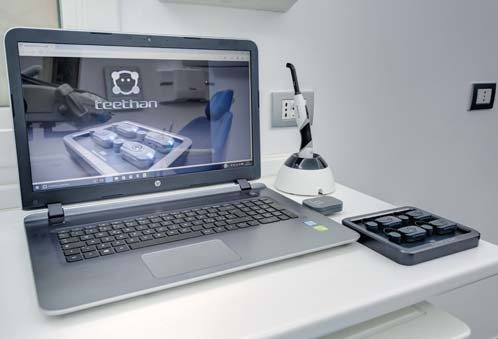
Метод синхроміографії
Teethan у 4-електродному варіанті забезпечує функціональну оцінку оклюзії зубів, вимірюючи електричну активність великих парних жувальних м'язів-елеваторів: передньої частини скроневих м'язів і власне жувальних м'язів. Одержані дані співвідношення, балансу нейром'язової активності жувальних м'язів дозволяють оцінювати оклюзію, оскільки жувальні м'язи негайно реагують як на відсутність оклюзійних контактів, так і на наявність оклюзійних контактів передчасних. Уся отримана інформація використовується для реконструкції оклюзійної площини з точки зору м'язової активності, за винятком випадків нейром'язових захворювань.
Для того, щоб мати повну оклюзійну картину пацієнта, потрібно інтегрувати морфологічну частину, яку зазвичай клінічно аналізують за допомогою методик визначення артикуляції, і функціональну частину, визначену за допомогою електроміографа.
Електроміограф Teethan оцінює вплив оклюзії на активність у парах скроневого і жувального м'язів і подає результати оцінки у вигляді індексів, що дають об'єктивне уявлення про оклюзію у трьох напрямках (баланс у передньо-задньому напрямку, по симетричності і по висоті):
- якщо оклюзійні контакти містяться переважно в передній або задній частині зубних рядів (передній/задній барицентр – індекс BAR);
- якщо оклюзійні контакти в зоні молярів містяться переважно або праворуч, або ліворуч (індекс POC MM);
- якщо оклюзійні контакти в зоні премолярів містяться переважно або праворуч, або ліворуч (індекс POC TA);
- чи є скручування в позиції нижньої щелепи, чи немає (індекс TORS);
- висока чи низька потужність жувальних м'язів при максимальному довільному напруженні (індекс IMPACT).
Синхроміографія побудована на порівняльному аналізі активності передніх скроневих і власне жувальних м'язів у парі шляхом максимального довільного стискання зубів протягом 5 с.
Teethan визначає всі ці аспекти кількісно, і можна відразу побачити, в нормальному діапазоні індекс чи ні і як далеко цей індекс від нормального діапазону. Це чудова підтримка при визначенні оклюзійного статусу пацієнта, тому що дозволяє об'єктивно оцінити всі показники до лікування, після лікування і робити оцінку оклюзії в динаміці.
Оскільки всі види реставрації можуть змінити оклюзію пацієнта, синхроміографію варто застосовувати у таких випадках:
- При калібруванні оклюзійної шини, коли можна з накладеними електродами робити тонку корекцію шини, видаляючи матеріал або додаючи його для балансування контактів, і визначати реакцію м'язів на зміни негайно.
- У протезуванні та імплантації для виявлення незбалансованої оклюзії і корекції реставрацій, усуваючи ризик перевантаження імплантатів/протезів.
- В ортодонтії для виявлення порушень у роботі нейром'язової системи до, у процесі і після ортодонтичного лікування.
- При лікуванні пацієнтів з дисфункцією для визначення досягнення збалансованої оклюзії.
- Для мотивації пацієнтів щодо необхідності нормалізації оклюзії і демонстрації досягнень проведеного лікування (це допомагає подати план лікування пацієнтові, особливо за відсутності очевидних скарг).
- У разі медико-правових конфліктних ситуацій, оскільки електроміограф Teethan забезпечує об'єктивний аналіз і його дані можуть бути використані як докази.
Техніка обстеження пацієнта
Обстеження пацієнта гранично просте і виконується безпосередньо в стоматологічному кабінеті, коли пацієнт сидить у кріслі. Приймач електроміографа під'єднується до комп'ютера, і запускається програмне забезпечення. Після відкриття програми слід внести дані пацієнта (ім'я, прізвище, стать, дата народження), якщо це первинний пацієнт, і вибрати пацієнта зі списку, якщо це повторний пацієнт.
Попередньо заряджені бездротові датчики потрібно активувати і підтвердити в програмі отримання сигналів приймачем електроміографа. Після цього на датчики, кожен з яких призначений для конкретного м'яза, і це на датчику позначено спеціальним символом, кріпляться приклеювані електроди з нанесеним струмопровідним гелем (ми використовуємо стандартні ЕКГ електроди). Електроди приклеюються на суху шкіру в проекції активних зон передньої частини скроневих м'язів і власне жувальних м'язів, активні зони визначаються пальпаторно при максимальному довільному стисканні зубів.
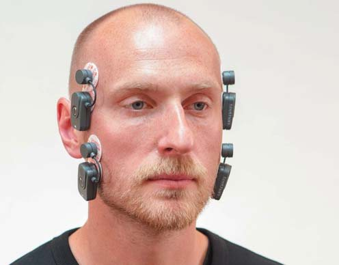
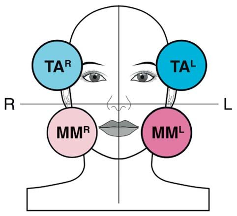
Калібрувальний тест з валиками
Наступний етап обстеження – калібрування з використанням класичного тесту з ватними валиками (cotton-roll-test). Два ватних валики слід помістити між молярами і премолярами праворуч і ліворуч, активувати калібрувальний тест у програмі і попросити пацієнта максимально стиснути зуби, підтримуючи силу стискання протягом 5 с (час підтримки максимального стискання візуалізується у програмі). Через 5 с на екрані з'являється кругова діаграма розподілу активності між усіма досліджуваними м'язами. Калібрувальний тест рекомендується виконати двічі, щоб переконатися у повторюваності вихідних даних. Класичний тест з ватними валиками призначений для депрограмування жувальних м'язів і позиціонування нижньої щелепи у центральному співвідношенні.
У синхроміографії тест з валиками є також і калібрувальним, тому що дані, одержані при цьому обстеженні пацієнта, будуть оцінюватися програмою у порівнянні з даними калібрувального тесту. Таким чином усувається вплив на дані обстеження різних факторів (наприклад, позиціонування електродів, електропровідність шкіри, вольове зусилля пацієнта... і навіть наявність бороди). Під час тесту з валиками програма фіксує тільки найвищий пік максимального довільного стискання для кожного м'яза, і програмне забезпечення електроміографа автоматично порівнюватиме дані обстеження, усуваючи всі випадкові фактори.
Після калібрування можна робити основне вимірювання біоелектричної активності жувальних м'язів, яке виконується в такій же техніці максимального довільного стискання зубів протягом 5 с. Якщо потрібне повторне вимірювання, слід попросити пацієнта проковтнути слину і знову виконати 5-секундний запис під час максимального довільного м'язового зусилля.
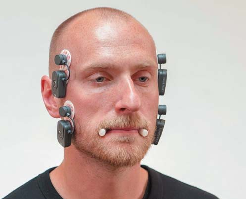
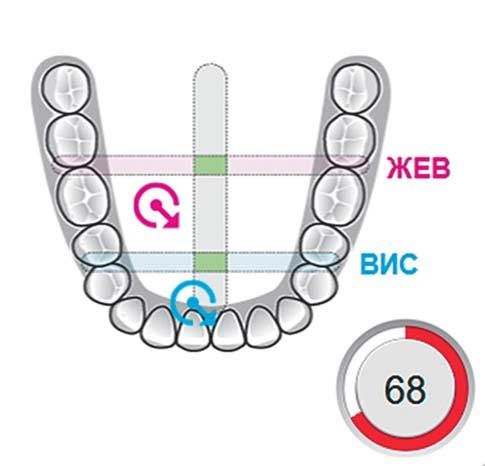
Дані обстеження в індексах
Далі одним кліком на відповідній іконці на екрані слід послідовно відкрити 4 вікна, що відображають основні індекси, кругову діаграму м'язової активності, діаграму асиметрії м'язової активності і підсумкові дані обстеження.
Програма Teethan автоматично реєструє п'ять основних показників оклюзії, що дозволяють оцінити її збалансованість. Для кожного індексу вказано межі нормального діапазону, оскільки ми всі асиметричні в певних межах.
Мітки – центри максимального докладання зусиль жувальних м'язів, що піднімають нижню щелепу, із зазначенням скручування.
Смуги – діапазон медіолатерального і передньо-заднього оклюзійного балансу.
Глобальний індекс нейром'язового балансу – сукупність (логарифм) усіх вимірюваних параметрів: зелене кільце – >83%, жовте кільце – 82-75%, червоне кільце – <74%.
На графічному зображенні нижнього зубного ряду є мітки і смуги, мітки позначають центри докладання активності м'язів у парах, а смуги – межі діапазону норми як фонові межі для міток.
Синя мітка – це позиціонування центру активності передніх скроневих м'язів, відображає стан оклюзії в зоні передніх зубів і премолярів. Червона мітка – це позиціонування центру активності власне жувальних м'язів, відображає стан оклюзії в зоні молярів.
Мітки зміщуються праворуч-ліворуч у бік домінуючого м'яза в парі і вгору-вниз у бік домінуючої пари м'язів, відображаючи порушення балансу, якщо мітки містяться за межами фонових смуг.
Якщо обидві мітки в межах вертикальної і горизонтальної смуг, оклюзія збалансована (всі індекси в межах норми). Безпосередньо поруч з малюнком відображається глобальний індекс нейром'язового балансу, який підсумовує значення всіх базових індексів і виражається у відсотках. Якщо глобальний індекс буде вищим 83%, це означає, що загальний баланс у межах норми і кільце навколо числа буде зеленого кольору. Якщо глобальний індекс у діапазоні 82-75%, загальний баланс порушений і кільце буде позначене жовтим кольором. Якщо глобальний індекс буде нижчим 74%, це свідчить, що загальний баланс значно порушений, і кільце буде червоного кольору.
POC ТА (Percent overlapping coefficient) – порівняльна оцінка домінування в парі передніх скроневих м'язів. POC ММ (Percent overlapping coefficient) – порівняльна оцінка домінування в парі власне жувальних м'язів.
Індекси POC ілюструють домінування (дисбаланс всередині м'язових пар TA і MM), переважання правого або лівого м'яза у м'язовій парі. Скроневі м'язи відповідають за оклюзію у передній частині зубних дуг, а індекс POC TA показує локалізацію контактів у зоні різців, іклів і премолярів. Жувальні м'язи відповідають за оклюзію у дистальних відділах зубної дуги, і індекс POC MM відповідно показує локалізацію контактів у зоні молярів.
Якщо м'язи однієї і тієї ж пари працюють цілком симетрично, теоретичний результат відповідного індексу POC буде близький до 100%. Якщо правий чи лівий м'яз у парі домінує, то індекс POC буде значно меншим 100% і вкаже сторону домінування.
Значення індексів POC поза діапазоном 83% вказують на переважні або недостатні оклюзійні контакти з одного боку зубних дуг відносно протилежного, відображаючи нейром'язовий баланс.
TORS – оцінка скручування нижньої щелепи у горизонтальній площині. Індексом TORS оцінюється порівняння активності поперечно-м'язових пар або латеральне зміщення нижньої щелепи (скручування у горизонтальній площині). У нормі цей показник становить понад 90%, і це засвідчує відсутність зусиль м'язів на скручування.
Якщо цей показник не відповідає нормальним значенням і становить менше 90%, м'язи схильні обертати щелепу праворуч або ліворуч у залежності від переважання відповідної перехресної пари м'язів.
ASIM – оцінка асиметрії між м'язами правої і лівої сторони. BAR – оцінка центру домінування в оклюзійній площині (передньо/заднє співвідношення).
Індекс BAR ілюструє порівняння активності пар скроневих і жувальних м'язів, і в нормі він у межах 90-100%. Барицентр може розташовуватися у передній або задній частині оклюзійної площини. Якщо барицентр розташований у передній частині оклюзійної площини, це означає, що активність скроневих м'язів вища, ніж активність жувальних, і свідчить про перевантаження в зоні премолярів. За такої оклюзії перевантажуються СНЩС, і це в тривалі терміни може викликати головні болі напруги і патологічні зміни в суглобах. Однак якщо барицентр розташований у задній частині оклюзійної площини, це є фізіологічним станом, коли активність жувальних м'язів вища, ніж активність скроневих, і переважання контактів – у зоні молярів. Це правило не діє у разі скелетного типу II, оскільки при прогнатичному прикусі скроневі м'язи завжди є активнішими, ніж власне жувальні м'язи.
Індекс ASIM порівнює парну активність скроневого і жувального м'язів правої сторони з парною активністю м'язів лівої сторони. У нормі асиметричність має перебувати в межах 10%, коли відмінність вказує на звично робочу сторону пацієнта. Але якщо індекс буде вищим, ніж це значення, із зазначенням домінуючої сторони, це може свідчити про наявність превалюючих контактів на цій стороні.
IMPACT – оцінка сумарної м'язової сили при стискуванні зубів. Індекс IMPACT показує зусилля, досягнуте під час стискування зубів, асоціюється із силою прикусування і розраховується з урахуванням активності всіх жувальних м'язів. Нормальне значення індексу – в межах 85-115%. Якщо інші індекси (POC, BAR, TORS) перебувають у нормальному діапазоні, то за індексом IMPACT можна судити про вертикальний розмір прикусу, названий також висотою прикусу, з позиції реакції жувальних м'язів. Якщо вертикальний розмір прикусу вищий, ніж оптимальний, зроблене зусилля буде низьким, і навпаки. Це може бути пов'язано також з наявністю ноцицептивного рефлексу, який зменшує виконану роботу. Таким чином, у нас є ознаки можливого завищення прикусу (індекс вище 115%) або зниження прикусу (індекс нижче 85%) вертикального розміру, з огляду на інші дані пацієнта.
Якщо індекс IMPACT вищий від нормального діапазону, слід діагностувати пацієнта на бруксизм. Значення індексу, менші від стандартних, можуть свідчити про стан гострого пропріоцептивного гальмування внаслідок болю при максимальному довільному стисканні м'язів.
Патологічне стирання зубів
Патологічне стирання зубів з втратою вертикального розміру прикусу є наслідком чотирьох причин: атриції, абразії, ерозії і абфракції.
Атриція – патологічне стирання зубів внаслідок жувальної функції, включаючи стирання зубами-антагоністами з реставраціями із кераміки, металів і т.д.
Абразія – патологічне стирання зубів внаслідок механічної дії. До абразії належать індивідуальне і професійне чищення зубів, шкідливі звички (наприклад, дефекти ріжучих країв у любителів соняшникового насіння).
Ерозія – патологічне стирання зубів внаслідок впливу хімічних чинників, передусім кислоти. До ерозії зубів призводять кислотна дієта і шлунково-стравохідний рефлюкс, утворюючи дефекти емалі та дентину зі специфічною локалізацією.
Абфракція – патологічне стирання зубів внаслідок функціонального перевантаження. Стискання зубів при бруксизмі для скидання напруги з мозку призводить до надмірної або надмірно частої деформації зубів і появи невеликих за площею, але глибоких дефектів у зоні шийок зубів.
У кожному клінічному випадку патологічного стирання зубів мають місце всі чотири причини, проте якась із причин є провідною, і її важливо виявити і по можливості усунути (корекція дієти, гігієни зубів і життєвого ритму, користування захисною капою, усунення шкідливих звичок, лікування шлунково-кишкових захворювань).
Де межа між фізіологічним і патологічним стиранням зубів, з якого моменту стирання зубів можна вважати патологією? Це визначальне питання, тому що як лікарі фізіологічні зміни ми можемо спостерігати, а патологічні зобов'язані усувати! Ми вважаємо, що відкриття дентину внаслідок стирання зубних тканин уже є патологією, коли деградація зубних тканин прискорюється і без лікарської допомоги призводить до значних порушень прикусу, м'язового балансу і загального здоров'я. При відкритті дентину його поверхневий шар склерозується (захисна реакція організму на патологічний стан), на глибину до 1 мм закриваються дентинні канальці, забезпечуючи герметичність зуба, і такий дентин втрачає компоненту в'язкості у в'язко-еластичній підтримці емалі, внаслідок чого край емалі відшаровується від дентину... Отже, відкритий дентин, навіть точково, – це патологічний стан, що вимагає лікарського втручання!
Усунення причин і наслідків патологічного стирання обов'язково передбачає відновлення анатомічної форми зубів і прикусу одним зі способів прямої або непрямої реставрації. Важливою умовою відновлення зубів і прикусу є визначення центрального співвідношення щелеп, однією з характеристик якого є досягнення балансу основних жувальних м'язів.
Дуже важливо визначати реакцію жувальних м'язів на зміну оклюзійних співвідношень безпосередньо у стоматологічному кріслі, оскільки лише в лікувальному кабінеті можна провадити корекцію оклюзії і контролювати результат щодо негайної реакції жувальних м'язів. Звичайно, використання електроміографа для контролю над оклюзією не звільняє стоматолога від розуміння клінічної ситуації у пацієнта, але є гарним запобіжником від помилок при корекції оклюзії.
Системне відновлення оклюзії
Наш 15-річний досвід відновлення зубів і прикусу при патологічному стиранні зубів заснований на розумінні того, що при втраті вертикального розміру прикусу всі його зміни (пряме співвідношення передніх зубів і перевантаження передньої частини зубних дуг, асиметричність прикусу) є наслідком втрати лише зубних тканин при відсутності переміщення самих зубів. Отже, якщо відновити втрачені зубні тканини, тобто анатомічну форму зубів, то наслідком цього буде відновлення початкового прикусу і м'язового балансу. І цей підхід працює!
Таку реставрацію ми називаємо доповненою реальністю, і чим менша втрата зубних тканин і більше збереглося анатомічних орієнтирів, тим легше і точніше можна відтворити втрачену форму зубів. Наслідком анатомічного відновлення зубів за принципом доповненої реальності буде нормалізація оклюзії через відновлення початкового прикусу і вихідне позиціонування суглобових головок, а відновленням м'язового балансу можна це відновлення підтвердити, для чого і потрібна синхроміографія.
Через тривалість прямої техніки відновлення анатомічної форми зубів композитом ми прийшли до алгоритму відновлення прикусу і оклюзії за дві реставраційні сесії – відновлення усіх верхніх зубів і відновлення усіх нижніх зубів – тривалістю 2-4 дні кожна в залежності від зруйнованості зубів і з місячною перервою між ними. Першу реставраційну сесію (відновлення анатомічної форми всіх верхніх зубів) ми починаємо з відновлення іклів як основи зубної дуги, продовжуємо відновленням молярів і премолярів з отриманням роз'єднання у фронтальній ділянці і завершуємо вільним відновленням латеральних і центральних різців у створеному просторі.
Щоб підготувати жувальні м'язи до відновлення прикусу, вихідна діагностика проводиться за місяць до першої реставраційної сесії.
Під час другої реставраційної сесії (відновлення всіх нижніх зубів) спочатку відновлюємо бічні зуби, отримуючи остаточний вертикальний розмір прикусу, потім відновлюємо нижні ікла, отримуючи бічне ведення, завершуємо відновленням нижніх різців, замикаючи прикус, і проводимо фінішну інтеграцію зубів в оклюзії.
Щоб провести прецизійне уточнення оклюзії, фінішну діагностику і корекцію слід зробити через місяць після другої реставраційної сесії.
Системне відновлення зубів під міографічним контролем за допомогою електроміографа Teethan продемонстровано у клінічному випадку відновлення зубів і прикусу у пацієнта з точковим відкриттям дентину.
Алгоритм системного відновлення оклюзії
- Діагностика (панорама, КТ, міографія, артикулятор). Захисна капа на нижні зуби (місяць).
- Відновлення анатомічної форми верхніх іклів.
- Відновлення форми верхніх молярів і премолярів.
- Відновлення анатомічної форми верхніх різців. Захисна капа на нижні зуби (місяць).
- Відновлення форми нижніх молярів і премолярів.
- Відновлення форми нижніх іклів (ведення).
- Відновлення анатомічної форми нижніх різців. Нова захисна капа на нижні зуби (місяць).
- Діагностика (панорама, КТ, міографія, артикулятор). Захисна капа на нижні зуби (рік +).
Для відновлення анатомічної форми всіх зубів у відповідності з нашою біоміметичною концепцією використані матеріали реставраційної програми Дентсплай Сірона:
- дентинна адгезивна система XP-bond;
- текучий композит SDR для гідрофобного покриття адгезивного шару;
- мікрогібридний композит Spectrum TPH (opaque A3,5) для імітації дентину;
- наногібридний композит Esthet-X (B2) для імітації основної емалі;
- наногібридний композит Esthet-X (YE) для імітації поверхневої емалі;
- текучий композит SDR для запечатування поверхневих дефектів композиту.
Для характеризації фісур використаний барвник Brown композиту Enamel Plus (Micerium). Фінішна обробка і полірування провадилися силіконовими формами Enhance і полірувальними пастами Prisma Gloss.
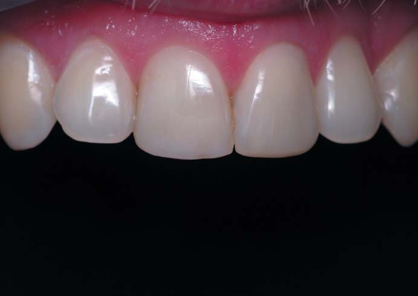
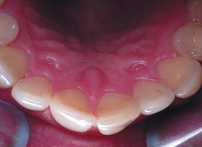
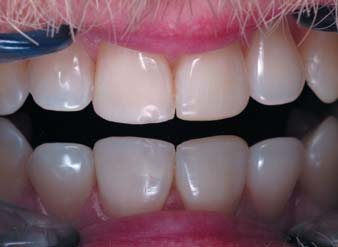
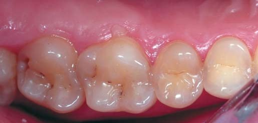
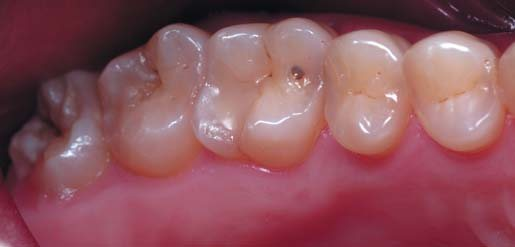
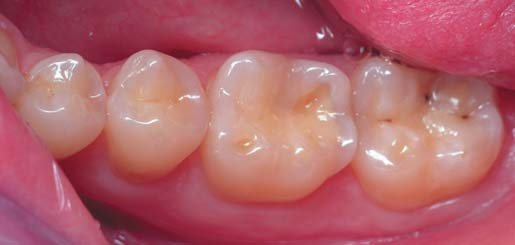
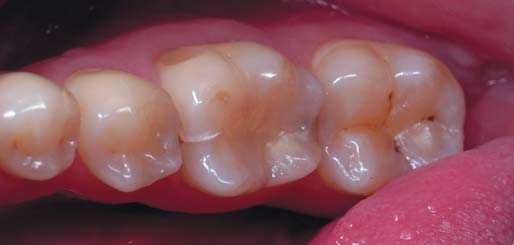
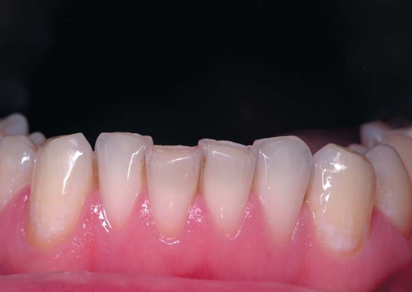
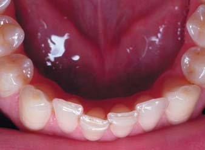
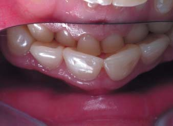
Стан зубів до системної реставрації.
У початковому стані зубів і прикусу видно окремі ділянки можливого ураження зубів карієсом. Через стирання емалі спостерігається оголення дентину на нижніх різцях, іклах і перших молярах, зменшення висоти верхніх центральних різців. У результаті стирання жувальної поверхні бічних зубів і, як наслідок, зниження висоти прикусу у фронтальній ділянці спостерігається щільне змикання між різцями. Також визначаються аномалії положення окремих зубів: повороти зубів 11, 21 і 33, вестибулярна позиція зуба 41, інфрапозиція зуба 23.
За даними електроміографії, баланс жувальних м'язів значно порушений (за відсутності скарг). Це відображено у висновку, що формується автоматично. У другому рядку висновку «Превалювання лівого жувального м'яза» поданий висновок стосується переднього скроневого м'яза, а не жувального (це помилка перекладу програми, і не єдина).
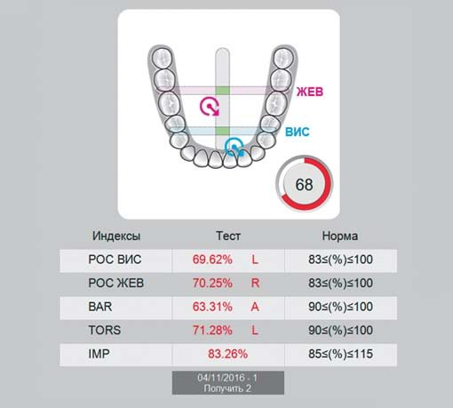
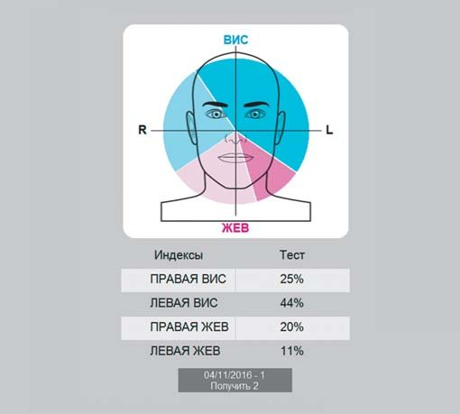
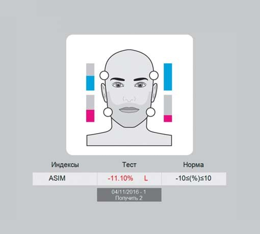
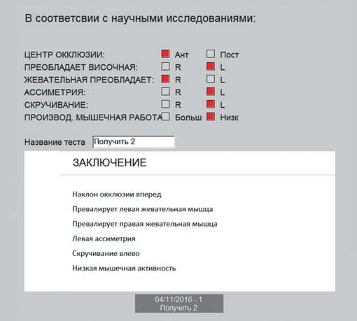
Дані синхроміографії до системної реставрації.
На першому графіку і червона, і синя мітки, що позначають центри докладання сили жувальних і скроневих м'язів, щодо горизонтальних смуг зміщені вперед (перевантаження передньої ділянки зубних дуг, характерне для зниження висоти прикусу), щодо вертикальної смуги червона мітка зміщена праворуч, синя – ліворуч (скручування нижньої щелепи), обидві мітки – це стрілки, які сигналізують про наявність ефекту скручування.
На круговій діаграмі видно виражене домінування лівого скроневого м'яза, що може бути як результатом аномалії положення обох іклів зліва, так і адаптивною реакцією на наявність ділянок відкритого дентину на нижніх молярах праворуч.
Підсумковий висновок за індексами при максимальному стисканні м'язів-елеваторів: загальне зниження м'язової активності, зниження вертикального розміру прикусу і скручування нижньої щелепи ліворуч.
Відновлення форми верхніх зубів
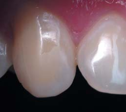
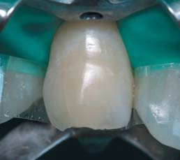
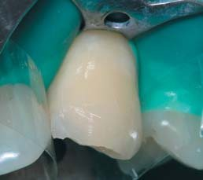
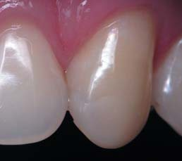
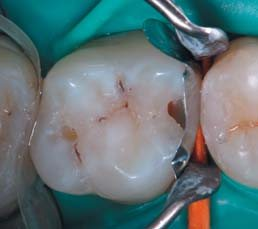
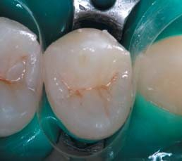
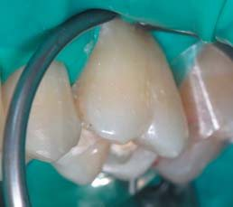
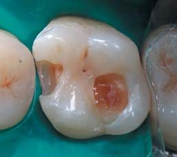
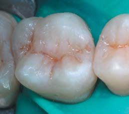
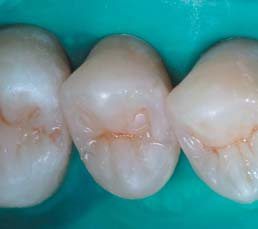
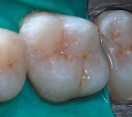
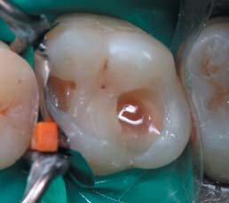
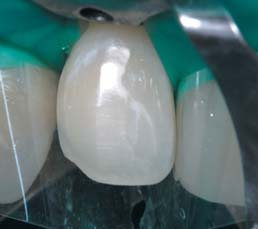
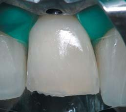
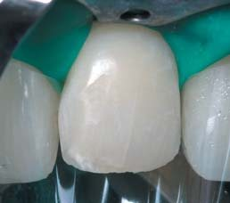
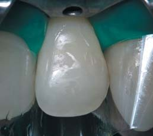
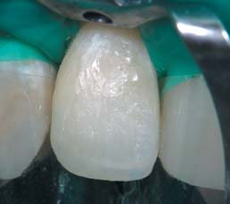
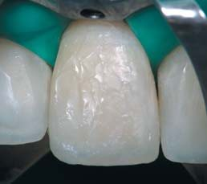
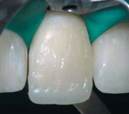
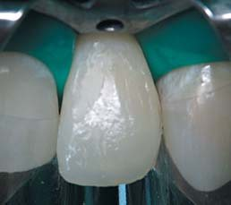
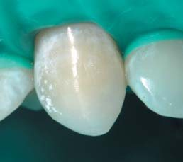
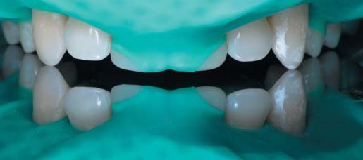
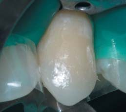
Відновлення форми верхніх зубів: 1 – іклів, 2 – молярів і премолярів, 3 – різців.
Відновлення форми нижніх зубів
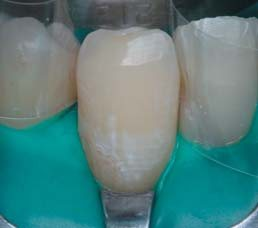
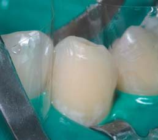
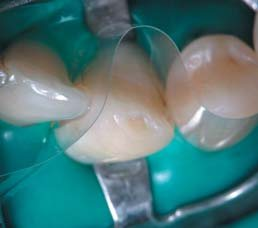
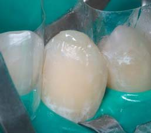
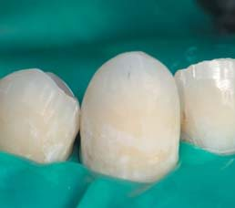
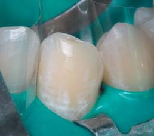
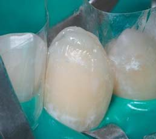
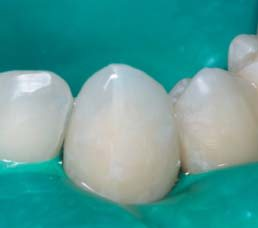
Відновлення форми нижніх зубів: 4 – молярів і премолярів, 5 – іклів (бічне ведення), 6 – різців (переднє ведення).
Стан зубів після системної реставрації
Протягом першої реставраційної сесії було відновлено всі верхні зуби згідно з поданим вище алгоритмом. Перерва між двома реставраційними сесіями вимушено становила три місяці замість рекомендованого одного, і за цей час сформувався незначний дефект ріжучого краю зуба 11 внаслідок асиметричності жувальних рухів.
Після відновлення анатомічної форми всіх нижніх зубів досягнуто мети системного відновлення зубів: відсутні відкриті ділянки дентину, виконано повороти зубів 11, 21 і 33, подовження зуба 23 і нахил назад зуба 41. Також з естетичних міркувань подовжено коронки зубів 12 і 22. Природна і штучна частини реставрованих зубів не відрізняються за кольором, візуально межа не визначається.
Ріжучі краї верхніх і нижніх різців утворюють правильні дуги з досягненням роз'єднання зубів у передній і бічних позиціях оклюзії. Верхні і нижні передні зуби перебувають у нещільному контакті, бічні зуби – у точкових контактах на жувальній поверхні опорних горбиків, верхня і нижня фронтальні ділянки збігаються по середній лінії.
Стан зубів після системної реставрації.
Діагностика за допомогою електроміографа провадилася безпосередньо після завершення інтеграції відновлених зубів в оклюзії. За даними поверхневої синхроміографії, відновлено баланс скроневих і жувальних м'язів (скарг не було, як і до відновлення), асиметричність і скручування в межах норми. Усі індекси показують відмінності від ідеальних значень в межах норми, і лише індекс BAR свідчить про зміщення центру оклюзії в зону молярів (це можна вважати очікуваним безпосередньо після завершення відновлення оклюзії). На першому графіку обидві мітки в межах вертикальної смуги і злегка зміщені дистально щодо обох горизонтальних смуг.
Дані синхроміографії після системної реставрації.
Стан зубів через місяць після системної реставрації
Діагностика стану відновлених зубів і прикусу робилася за планом рівно через місяць після завершення двох сесій реставрації. Пацієнт весь цей час користувався ізолюючою капою на нижній зубний ряд, виготовленою відразу ж після відновлення нижніх зубів. Скарг на чутливість зубів чи проблеми з оклюзією у пацієнта не було. Дані об'єктивного обстеження: усі відновлені зуби, у тому числі й ті, що зазнали реконструкції, зберегли свою форму і колір, на поверхні композиту немає майданчиків стирання, ясенний край у нормі. На жувальній поверхні зубів 16 і 36 виявлено точки профарбовування харчовими барвниками розкритих бульбашок повітря у композиті (після адгезивної підготовки проведено очищення та заповнення цих точок текучим композитом SDR).
Стан зубів через місяць після системної реставрації.
На тлі загального благополуччя і задоволеності пацієнта досягнутим результатом відновлення зубів здивували результати синхроміографічного обстеження... Знову до червоного рівня опустився глобальний індекс. Червона і синя мітки змістилися вперед щодо горизонтальних смуг, і обидві мітки тепер розміщувалися праворуч від вертикальної смуги, а стрілки на мітках знову показали скручування ліворуч. Якщо у початковому дослідженні у парі скроневих м'язів домінував лівий м'яз, то тепер, хоч і меншою мірою, домінує правий. Індекс IMPACT показав повний збіг вертикального розміру прикусу з оптимальним.
Дані синхроміографії через місяць після реставрації.
Така значна асиметрія в реакції жувальних м'язів на ситуацію з оклюзією може бути результатом щільнішого оклюзійного контакту праворуч, тому можливі точки передчасного контакту були перевірені з артикуляційною фольгою 8 мк. Корекція горбиків на правих молярах полягала в зменшенні об'єму зі збереженням анатомічної форми в цілому як на напрямних, так і на опорних горбиках.
Стан зубів через рік після системної реставрації
Через 13 місяців після корекції оклюзії проведено огляд і синхроміографію. Перед фотореєстрацією зубів і прикусу ні професійна гігієна, ні полірування зубів не робилися.
До цього огляду і діагностики було два звернення (через 6 місяців і через 10 місяців) зі скаргами на скол горбика зуба 13. Хоча ікла – це оклюзійно активні зуби і ймовірність пошкодження реставрацій у результаті циклічних навантажень вища у порівнянні з ризиками для інших зубів, потрібно визначити ймовірну причину відколів горбика цього зуба. Найімовірніше, цей двократний скол горбика пов'язаний з надмірною активністю правого скроневого м'яза. І ця активність «читається» на круговій діаграмі.
Контрольний огляд через рік: анатомічна форма та колір усіх зубів збережені, крайового забарвлювання реставрованих і реконструйованих зубів немає, майданчиків стирання на горбиках і ріжучих краях немає, ясенні краї в нормі.
Стан зубів через рік після системної реставрації.
Синхроміографія: контрольне обстеження демонструє, що завдяки відновленню анатомічної форми всіх зубів за авторським алгоритмом оклюзію нормалізовано. Глобальний індекс нейром'язового балансу засвідчує гарну м'язову активність. На першому графіку обидві мітки (червона мітка, що показує активність жувальних м'язів, синя мітка, що показує активність скроневих м'язів) перебувають у полі вертикальної і горизонтальних смуг. Дещо знизився IMPACT індекс (швидше за все, вертикальний розмір прикусу трохи зменшився за рахунок адаптації реставрованих зубів один до одного), але це зниження в межах норми, як і асиметричність відповідно до індексу ASIM.
Дані синхроміографії через рік після реставрації.
Дані фотореєстрації і графічний звіт про результати синхроміографії дозволяють оцінити відновлення анатомічної форми всіх зубів цілком успішним, але попереду ще 9 років прогнозованого терміну служби реставрацій.
Інтеграція в оклюзії відновлених зубів і зубних рядів
Оскільки оцінка оклюзії пацієнтом може бути вельми далека від реальної, при оцінці прикусу до і після відновлення анатомічної форми всіх зубів слід перевіряти співвідношення верхніх і нижніх зубних рядів по середній лінії, по іклах і по бічних зубах з акцентом на перших молярах.
Якщо при позитивній оцінці оклюзії пацієнтом і наявності множинних оклюзійних контактів визначається зміщення середньої лінії нижнього зубного ряду вбік, а також змінюється співвідношення іклів і бічних зубів праворуч і ліворуч, це означає, що висота бічних зубів більша на протилежному боці і нижня щелепа злегка зміщується вбік від завищення. Зменшенням форми опорних горбиків на боці завищення потрібно домогтися вирівнювання співвідношення зубних рядів по середній лінії, однакового співвідношення іклів і перших молярів.
Після досягнення візуально правильного співвідношення зубних рядів по середній лінії, іклах і перших молярах слід перевірити оклюзійні контакти на бічних зубах при частому і короткочасному змиканні зубів у звичній оклюзії. Усуненню підлягають усі контакти на зовнішній поверхні опорних горбиків (оральна поверхня на верхніх зубах і вестибулярна поверхня на нижніх зубах) і на жувальній поверхні напрямних горбиків (вестибулярні горбики на верхніх зубах і оральні горбики на нижніх зубах). У звичному змиканні верхні і нижні бічні зуби повинні контактувати між собою лише жувальними поверхнями опорних горбиків і лише точково, що здійсненно тільки тоді, коли всі зуби мають правильну анатомічну форму.
Дивно, але якщо відновлений зуб інтегрувати в зубному ряду зі стертістю, знадобиться з десяток артикуляційних перевірок і корекцій, перш ніж буде досягнуто прийнятного результату. При відновленні ж за збереженими орієнтирами правильної анатомічної форми всіх зубів зазвичай буває досить 2-3 перевірок, щоб пацієнтові стало комфортно, а артикуляційна перевірка підтвердила прийнятність досягнутої оклюзії. Відновлювати правильну анатомію набагато легше, але умовою цього відновлення має бути системність!
При оцінці оклюзії у крайніх позиціях слід перевірити симетричне домінування верхніх центральних різців у передній оклюзії і домінування іклів у бічній оклюзії праворуч і ліворуч. Жодні інші зуби не повинні контактувати між собою (верхні і нижні). За анатомічно правильної висоти центральних різців та іклів ця вимога виконується досить просто. Стирання композиту дозволяє реставраціям самоадаптуватися.
Баланс жувальних м'язів у динаміці
Порівнюючи графічні ілюстрації балансу основних жувальних м'язів у цього пацієнта до і після відновлення анатомічної форми всіх зубів через місяць і через рік, можна бачити два етапи змін. Спочатку, з огляду на попередню місячну підготовку до реставрації за допомогою ізолюючої капи, був отриманий чудовий результат у балансі скроневих і жувальних м'язів після завершення реставрації всіх зубів і досягнення анатомічно правильного за зовнішніми ознаками прикусу.
За таких розбіжностей м'язового балансу в динаміці пацієнт позитивно оцінював свою оклюзію як до, так і після реставрації, скарг не було, крім, як йому здавалося, прикрих двох відколів правого верхнього ікла через 6 і 10 місяців після завершення відновлення анатомічної форми всіх зубів і прикусу. Це демонструє значну чутливість синхроміографії в оцінці оклюзії у порівнянні зі звичайною артикуляційної оцінкою.
Потім протягом першого місяця перед остаточною корекцією оклюзії баланс жувальних м'язів був зареєстрований з явним погіршенням, що може бути пов'язано як з оклюзійними порушеннями, так і з реакцією жувальних м'язів на зміну оклюзії.
І через рік, коли нейром'язові співвідношення перебудувалися у нормалізованій оклюзії, баланс жувальних м'язів знову повернувся до норми. Адаптаційні можливості організму забезпечили перебудову нейромускулярних взаємодій.
Баланс жувальних м'язів у динаміці: до реставрації, після реставрації, через місяць, через рік.
Висновки
Системне відновлення анатомічної форми зубів і прикусу передбачає чотири візити у стоматологічну клініку: діагностичний, відновлення всіх верхніх зубів, відновлення всіх нижніх зубів, контрольний з остаточним балансуванням оклюзії.
Головний принцип відновлення зубів і прикусу за патологічного стирання – все або нічого, оскільки кінцевий успіх залежить від відновлення всіх зубів і для досягнення збалансованої оклюзії значення має анатомічна форма кожного зуба без винятку.
Тривалість реставрації зубів у прямій вільній техніці вимагає, щоб реставраційні візити планувалися на 2-3 повних робочих дні. Це прийнятна тривалість роботи з позицій сприйнятливості анестезії і загальної втоми.
Звичайно, тривалість реставрації зубів залежить від їх стану, тому складне відновлення, таке як з ендодонтичним переліковуванням зубів з литою вкладкою і під керамікою, можна виносити на додаткові робочі дні.
Поодинокі керамічні конструкції підлягають заміні на композитні, однак якщо керамічна конструкція охоплює кілька зубів, то ми робимо відновлення жувальної поверхні композитом тимчасово з метою одномоментного відновлення оклюзії всього зубного ряду з наступною заміною конструкцій на реставрацію з композиту або керамічну в новій формі протягом року.
Тривалість системного відновлення оклюзії становить 3-5 місяців з обов'язковим використанням захисної капи на всіх етапах реставрації. Контрольні візити в клініку потрібні щороку для оцінки зношування поверхні композиту в реставрованих зубах. У разі неприйнятного зношування реставрацій з втратою точкових контактів, зменшення вертикального розміру прикусу з формуванням перевантаження передніх зубів і особливо в разі відкриття дентину провадиться реновація горбиків бічних зубів (жувальна поверхня опорних і напрямних горбиків, зовнішня поверхня опорних горбиків) у межах реставрацій. Необхідність реновації горбиків може з'явитися вже через 3 роки в разі вираженого бруксизму або через 5-10 років і залежить також від регулярності використання захисної капи.
Синхроміографічне обстеження пацієнта до системного відновлення оклюзії, після нього і в динаміці дозволяє шляхом визначення балансу скроневих і жувальних м'язів оцінити стан початкової і відновленої оклюзії. Негайна реакція жувальних м'язів на зміну оклюзії і зрозуміла інформація у вигляді індексів дозволяють ефективно контролювати корекцію реставрованих зубів.
Автор висловлює щиру подяку Валерії Феррарі і Антоніно Качоппо за допомогу в освоєнні синхроміографії та написанні цієї статті.
Література
- Радлинский С. Реконструкция зубов в адгезивной технике // ДентАрт. — 1997. — №2. — С. 18-27.
- Радлинский С. Системное восстановление всех зубов при повышенной стираемости // ДентАрт. — 2007. — №3. — С. 38-48.
- Электромиография. Wikimedia Foundation, Inc., 2018.
- Backman Michael. Encyclopedia of Electromyography. Volume V (Clinical Aspects and Sports Medicine). — NY: Orange Apple, 2017. — P. 318.
- Dawson E.Peter. Functional Occlusion. From TMJ to Smile Design. St.Louis: Mosby, 2007. — P. 275.
- Merletti Roberto, Farina Dario. Surface Electromyography: Physiology, Engineering, and Applications. — Wiley-IEEE Press, 2016. — Chapter 3. — P. 137.
- Mills R Kerry. The Basics of Electromyography // J Neurol Neurosurg Psychiatry. — 2005. V.76 — P. 32-35.